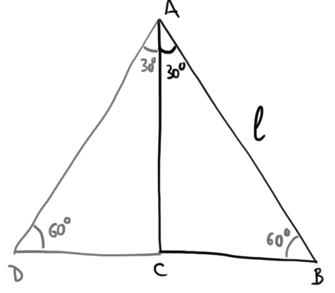

Suggerimento:
Se vi spaventa il fatto che il lato \(AB\) misura \(l\), consideratelo di misura \(10\).
Completiamo il triangolo specchiandolo rispetto al lato \(AC\). Otteniamo il seguente triangolo \(ABD\), che è equilatero, perchè
ha tutti gli angoli di \(60°\).

Questo ci permette di dedurre la misura di \(CB\).
Da qua abbiamo tutti gli elementi per trovare il seno, coseno e tangente dell'angolo \(60°\).
Considerate il triangolo rettangolo in figura.

Supponiamo che la misura del lato \(AB\) sia \(l\). Siccome il triangolo isoscele, sappiamo che anche il lato \(AC\) misura \(l\).
Suggerimento:
Trovate l'ipotenusa \(AB\) applicando il teorema di Pitgora.
Successivamente applicate la definizione di seno, coseno e tangente utilizzado le misure dei cateti fornite dal problema e quella dell'ipotenusa che avete trovato al passo precedente.